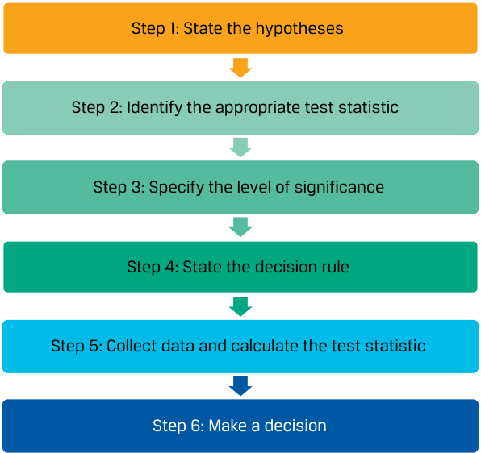

Learning Module 8 Hypothesis Testing - Part 1: Introduction
Volume 1: Quantitative Methods
Learning Module 8 Hypothesis Testing
Part 1/3: Introduction (PDF Pages 223–229)
Tập 1: Phương pháp Định lượng (Quantitative Methods)
Học phần 8: Kiểm định Giả thuyết (Hypothesis Testing)
Phần 1/3: Giới thiệu (Introduction) (Trang PDF 223–229)
L E A R N I N G M O D U L E
H Ọ C P H Ầ N
8
8
Hypothesis Testing
Kiểm định Giả thuyết (Hypothesis Testing)
by Pamela Peterson Drake, PhD, CFA.
tác giả: Pamela Peterson Drake, PhD, CFA.
Pamela Peterson Drake, PhD, CFA, is at James Madison University (USA).
Pamela Peterson Drake, PhD, CFA, làm việc tại Đại học James Madison (Hoa Kỳ).
LEARNING OUTCOMES
MỤC TIÊU HỌC TẬP (LEARNING OUTCOMES)
| Mastery | The candidate should be able to: |
|---|---|
| explain hypothesis testing and its components, including statistical significance, Type I and Type II errors, and the power of a test |
|
| construct hypothesis tests and determine their statistical significance, the associated Type I and Type II errors, and power of the test given a significance level |
|
| compare and contrast parametric and nonparametric tests, and describe situations where each is the more appropriate type of test |
| Mức độ Thành thạo | Ứng viên cần có khả năng: |
|---|---|
| Giải thích kiểm định giả thuyết (hypothesis testing) và các cấu phần của nó, bao gồm ý nghĩa thống kê (statistical significance), sai lầm Loại I và Loại II (Type I and Type II errors), và lực kiểm định (power of a test). | |
| Xây dựng các kiểm định giả thuyết và xác định ý nghĩa thống kê của chúng, các sai lầm Loại I và Loại II liên quan, cũng như lực kiểm định khi biết trước một mức ý nghĩa (significance level). | |
| So sánh và đối chiếu các kiểm định tham số (parametric tests) và phi tham số (nonparametric tests), đồng thời mô tả các tình huống mà mỗi loại kiểm định là phù hợp hơn. |
INTRODUCTION
GIỚI THIỆU (INTRODUCTION)
Hypothesis testing is covered extensively in the pre-read. This learning module builds on that coverage and assumes a functional understanding of the topic gained there or elsewhere.
Kiểm định giả thuyết (hypothesis testing) đã được trình bày chi tiết trong phần tài liệu đọc trước (pre-read). Học phần này phát triển dựa trên nội dung đó và giả định rằng người học đã có sự hiểu biết thực hành về chủ đề này từ tài liệu đó hoặc từ nguồn khác.
Lesson 1 summaries the hypothesis testing process by exemplifying its use in finance and investment management. Lesson 2 brings forward the impact of errors in the hypothesis testing process. Lesson 3 introduces nonparametric tests and their applications in investment management.
Bài 1 tóm tắt quy trình kiểm định giả thuyết thông qua các ví dụ về việc sử dụng nó trong tài chính và quản lý đầu tư. Bài 2 làm rõ tác động của các sai lầm trong quy trình kiểm định giả thuyết. Bài 3 giới thiệu các kiểm định phi tham số (nonparametric tests) và ứng dụng của chúng trong quản lý đầu tư.
LEARNING MODULE OVERVIEW
TỔNG QUAN HỌC PHẦN (LEARNING MODULE OVERVIEW)
- The steps in testing a hypothesis are as follows: 1. State the hypotheses. 2. Identify the appropriate test statistic and its probability distribution.
3. Specify the significance level.
4. State the decision rule. 5. Collect the data and calculate the test statistic.
- Các bước trong việc kiểm định một giả thuyết như sau: 1. Phát biểu các giả thuyết (State the hypotheses). 2. Xác định thống kê kiểm định phù hợp và phân phối xác suất của nó (Identify the appropriate test statistic and its probability distribution). 3. Xác định mức ý nghĩa (Specify the significance level). 4. Phát biểu quy tắc quyết định (State the decision rule). 5. Thu thập dữ liệu và tính toán thống kê kiểm định (Collect the data and calculate the test statistic).
6. Make a decision.
6. Đưa ra quyết định (Make a decision).
-
A test statistic is a quantity, calculated using a sample, whose value is the basis for deciding whether to reject or not reject the null hypothesis. We compare the computed value of the test statistic to a critical value for the same test statistic to determine whether to reject or not reject the null hypothesis.
-
In reaching a statistical decision, two possible errors can be made: reject a true null hypothesis (a Type I error, or false positive), or fail to reject a false null hypothesis (a Type II error, or false negative).
-
The level of significance of a test is the probability of a Type I error when conducting a hypothesis test. The standard approach to hypothesis testing involves specifying a level of significance (i.e., the probability of a Type I error). The complement of the level of significance is the confidence level.
-
For hypothesis tests concerning the population mean of a normally distributed population with an unknown variance, the theoretically correct test statistic is the t -statistic.
-
To test whether the observed difference between two means is statistically significant, the analyst must first decide whether the samples are independent or dependent (related). If the samples are independent, a test concerning differences between means is employed. If the samples are dependent, a test of mean differences (paired comparisons test) is employed.
-
To determine whether the difference between two population means from normally distributed populations with unknown but equal variances, the appropriate test is a t -test based on pooling the observations of the two samples to estimate the common but unknown variance. This test is based on an assumption of independent samples.
-
In tests concerning two means based on two samples that are not independent, the data are often arranged in paired observations and a test of mean differences (a paired comparisons test) is conducted. When the samples are from normally distributed populations with unknown variances, the appropriate test statistic is t -distributed.
-
In tests concerning the variance of a single normally distributed population, the test statistic is chi-square with n − 1 degrees of freedom, where n is sample size.
-
For tests concerning differences between the variances of two normally distributed populations based on two random, independent samples, the appropriate test statistic is based on an F -test (the ratio of the sample variances). The degrees of freedom for this F -test are n 1 − 1 and n 2 − 1, where n 1 corresponds to the number of observations in the calculation of the numerator, and n 2 is the number of observations in the calculation of the denominator of the F -statistic.
-
A parametric test is a hypothesis test concerning a population parameter, or a hypothesis test based on specific distributional assumptions. In contrast, a nonparametric test either is not concerned with a parameter or makes minimal assumptions about the population from which the sample was taken.
-
Thống kê kiểm định (test statistic) là một đại lượng được tính toán bằng cách sử dụng một mẫu, có giá trị làm cơ sở để quyết định bác bỏ hay không bác bỏ giả thuyết không (null hypothesis). Chúng ta so sánh giá trị tính toán được của thống kê kiểm định với một giá trị tới hạn (critical value) của cùng thống kê kiểm định đó để xác định xem nên bác bỏ hay không bác bỏ giả thuyết không.
-
Khi đưa ra một quyết định thống kê, có thể mắc phải hai sai lầm: bác bỏ một giả thuyết không đang đúng (sai lầm Loại I – Type I error, hay dương tính giả – false positive), hoặc không bác bỏ một giả thuyết không đang sai (sai lầm Loại II – Type II error, hay âm tính giả – false negative).
-
Mức ý nghĩa của một kiểm định (level of significance) là xác suất mắc sai lầm Loại I khi tiến hành kiểm định giả thuyết. Cách tiếp cận tiêu chuẩn trong kiểm định giả thuyết bao gồm việc chỉ định trước một mức ý nghĩa (tức là xác suất mắc sai lầm Loại I). Phần bù của mức ý nghĩa là mức độ tin cậy (confidence level).
-
Đối với các kiểm định giả thuyết liên quan đến trung bình tổng thể của một tổng thể có phân phối chuẩn với phương sai chưa biết, thống kê kiểm định chính xác về mặt lý thuyết là thống kê $t$ (t-statistic).
-
Để kiểm định xem sự khác biệt quan sát được giữa hai giá trị trung bình có ý nghĩa thống kê hay không, trước tiên nhà phân tích phải quyết định xem các mẫu là độc lập (independent) hay phụ thuộc/có liên quan (dependent/related). Nếu các mẫu độc lập, kiểm định sự khác biệt giữa hai giá trị trung bình (test concerning differences between means) được sử dụng. Nếu các mẫu phụ thuộc, kiểm định giá trị trung bình của các chênh lệch (test of mean differences hay kiểm định so sánh cặp – paired comparisons test) được sử dụng.
-
Để xác định sự khác biệt giữa hai trung bình tổng thể từ các tổng thể có phân phối chuẩn với phương sai chưa biết nhưng bằng nhau, kiểm định phù hợp là kiểm định $t$ (t-test) dựa trên việc gộp chung (pooling) các quan sát của hai mẫu để ước tính phương sai chung chưa biết. Kiểm định này dựa trên giả định các mẫu độc lập.
-
Trong các kiểm định liên quan đến hai giá trị trung bình dựa trên hai mẫu không độc lập, dữ liệu thường được sắp xếp thành các quan sát ghép cặp (paired observations) và một kiểm định trung bình của các chênh lệch (kiểm định so sánh cặp) được tiến hành. Khi các mẫu đến từ các tổng thể có phân phối chuẩn với phương sai chưa biết, thống kê kiểm định phù hợp có phân phối $t$.
-
Trong các kiểm định liên quan đến phương sai của một tổng thể đơn lẻ có phân phối chuẩn, thống kê kiểm định là Khi-bình phương (chi-square – $\chi^2$) với $n - 1$ bậc tự do (degrees of freedom), trong đó $n$ là kích thước mẫu.
-
Đối với các kiểm định liên quan đến sự khác biệt giữa phương sai của hai tổng thể có phân phối chuẩn dựa trên hai mẫu ngẫu nhiên, độc lập, thống kê kiểm định phù hợp dựa trên kiểm định $F$ (F-test – tỷ số của hai phương sai mẫu). Bậc tự do cho kiểm định $F$ này là $n_1 - 1$ và $n_2 - 1$, trong đó $n_1$ tương ứng với số lượng quan sát trong phép tính ở tử số, và $n_2$ là số lượng quan sát trong phép tính ở mẫu số của thống kê $F$.
-
Kiểm định tham số (parametric test) là một kiểm định giả thuyết liên quan đến một tham số tổng thể, hoặc một kiểm định giả thuyết dựa trên các giả định phân phối cụ thể. Ngược lại, kiểm định phi tham số (nonparametric test) hoặc không liên quan đến một tham số hoặc đưa ra các giả định tối thiểu về tổng thể mà từ đó mẫu được lấy ra.
- A nonparametric test is primarily used when data do not meet distributional assumptions, when there are outliers, when data are given in ranks, or when the hypothesis we are addressing does not concern a parameter.
- Kiểm định phi tham số chủ yếu được sử dụng khi dữ liệu không đáp ứng các giả định về phân phối, khi có các giá trị ngoại lai (outliers), khi dữ liệu được cho dưới dạng thứ hạng (ranks), hoặc khi giả thuyết chúng ta đang giải quyết không liên quan đến một tham số.
HYPOTHESIS TESTS FOR FINANCE
CÁC KIỂM ĐỊNH GIẢ THUYẾT TRONG TÀI CHÍNH (HYPOTHESIS TESTS FOR FINANCE)
2
2
explain hypothesis testing and its components, including statistical significance, Type I and Type II errors, and the power of a test
Giải thích kiểm định giả thuyết và các cấu phần của nó, bao gồm ý nghĩa thống kê, sai lầm Loại I và Loại II, và lực kiểm định
We use hypothesis testing to make decisions using data. Hypothesis testing is part of statistical inference, the process of making judgments about a larger group (a population) based on a smaller group of observations (a sample).
Chúng ta sử dụng kiểm định giả thuyết (hypothesis testing) để đưa ra quyết định bằng cách sử dụng dữ liệu. Kiểm định giả thuyết là một phần của suy luận thống kê (statistical inference), quá trình đưa ra các phán đoán về một nhóm lớn hơn (tổng thể) dựa trên một nhóm quan sát nhỏ hơn (mẫu).
In hypothesis testing, we test to determine whether a sample statistic is likely to come from a population with the hypothesized value of the population parameter.
Trong kiểm định giả thuyết, chúng ta kiểm định để xác định xem một thống kê mẫu có khả năng đến từ một tổng thể có giá trị tham số tổng thể như giả thuyết hay không.
The concepts and tools of hypothesis testing provide an objective means to gauge whether the available evidence supports the hypothesis. After applying a statistical test, we should have a clearer idea of the probability that a hypothesis is true or not, although our conclusion always stops short of certainty.
Các khái niệm và công cụ của kiểm định giả thuyết cung cấp một phương tiện khách quan để đánh giá xem bằng chứng hiện có có ủng hộ giả thuyết hay không. Sau khi áp dụng một kiểm định thống kê, chúng ta sẽ có ý niệm rõ ràng hơn về xác suất một giả thuyết là đúng hay sai, mặc dù kết luận của chúng ta luôn chưa đạt tới sự chắc chắn tuyệt đối.
The main focus of this lesson is on the framework of hypothesis testing and tests concerning mean and variance, two measures frequently used in investments.
Trọng tâm chính của bài học này là khuôn khổ của kiểm định giả thuyết và các kiểm định liên quan đến giá trị trung bình và phương sai, hai thước đo thường xuyên được sử dụng trong đầu tư.
The Process of Hypothesis Testing
Quy trình Kiểm định Giả thuyết (The Process of Hypothesis Testing)
Hypothesis testing is part of the branch of statistics known as statistical inference. In statistical inference, there is estimation and hypothesis testing. Estimation involves point estimates and interval estimates. Consider a sample mean, which is a point estimate, that we can use to form a confidence interval. In hypothesis testing, the focus is examining how a sample statistic informs us about a population parameter. A hypothesis is a statement about one or more populations that we test using sample statistics.
Kiểm định giả thuyết là một phần của nhánh thống kê được gọi là suy luận thống kê. Trong suy luận thống kê, có ước lượng (estimation) và kiểm định giả thuyết (hypothesis testing). Ước lượng bao gồm ước lượng điểm (point estimates) và ước lượng khoảng (interval estimates). Hãy xem xét một trung bình mẫu, vốn là một ước lượng điểm, mà chúng ta có thể sử dụng để lập một khoảng tin cậy. Trong kiểm định giả thuyết, trọng tâm là xem xét cách một thống kê mẫu cung cấp thông tin cho chúng ta về một tham số tổng thể. Một giả thuyết (hypothesis) là một phát biểu về một hoặc nhiều tổng thể mà chúng ta kiểm định bằng cách sử dụng các thống kê mẫu.
The process of hypothesis testing begins with the formulation of a theory to organize and explain observations. We judge the correctness of the theory by its ability to make accurate predictions—for example, to predict the results of new observations. If the predictions are correct, we continue to maintain the theory as a possibly correct explanation of our observations. Risk plays a role in the outcomes of observations in finance, so we can only try to make unbiased, probability-based judgments about whether the new data support the predictions. Statistical hypothesis testing fills that key role of testing hypotheses when there is uncertainty. When an analyst correctly formulates the question into a testable hypothesis and carries out a test of hypotheses, the use of well-established scientific methods supports the conclusions and decisions made on the basis of this test.
Quy trình kiểm định giả thuyết bắt đầu bằng việc hình thành một lý thuyết để sắp xếp và giải thích các quan sát. Chúng ta đánh giá tính đúng đắn của lý thuyết bằng khả năng đưa ra các dự đoán chính xác của nó—ví dụ, dự đoán kết quả của các quan sát mới. Nếu các dự đoán là chính xác, chúng ta tiếp tục duy trì lý thuyết đó như một lời giải thích có khả năng đúng cho các quan sát của mình. Rủi ro đóng một vai trò trong kết quả của các quan sát trong tài chính, vì vậy chúng ta chỉ có thể cố gắng đưa ra các phán đoán không chệch, dựa trên xác suất về việc liệu dữ liệu mới có ủng hộ các dự đoán hay không. Kiểm định giả thuyết thống kê lấp đầy vai trò quan trọng đó là kiểm định các giả thuyết khi có sự không chắc chắn. Khi một nhà phân tích chuyển hóa đúng câu hỏi thành một giả thuyết có thể kiểm định được và tiến hành kiểm định giả thuyết, việc sử dụng các phương pháp khoa học đã được thiết lập vững chắc sẽ củng cố cho các kết luận và quyết định được đưa ra trên cơ sở kiểm định này.
We organize this introduction to hypothesis testing around the six steps presented in Exhibit 1, which illustrate the standard approach to hypothesis testing.
Chúng tôi sắp xếp phần giới thiệu về kiểm định giả thuyết này xoay quanh sáu bước được trình bày trong Minh họa 1, minh họa cách tiếp cận tiêu chuẩn đối với kiểm định giả thuyết.
Exhibit 1: The Process of Hypothesis Testing
Minh họa 1: Quy trình Kiểm định Giả thuyết (Exhibit 1: The Process of Hypothesis Testing)

Chú thích hình ảnh: - Bước 1: Phát biểu các giả thuyết (State the hypotheses) - Bước 2: Xác định thống kê kiểm định phù hợp (Identify the appropriate test statistic) - Bước 3: Xác định mức ý nghĩa (Specify the level of significance) - Bước 4: Phát biểu quy tắc quyết định (State the decision rule) - Bước 5: Thu thập dữ liệu và tính toán thống kê kiểm định (Collect data and calculate the test statistic) - Bước 6: Đưa ra quyết định (Make a decision)
Stating the Hypotheses
Phát biểu các Giả thuyết (Stating the Hypotheses)
For each hypothesis test, we always state two hypotheses: the null hypothesis (or null), designated H 0, and the alternative hypothesis , designated Ha. The null hypothesis is a statement concerning a population parameter or parameters considered to be true unless the sample we use to conduct the hypothesis test gives convincing evidence that the null hypothesis is false. In fact, the null hypothesis is what we want to reject. If there is sufficient evidence to indicate that the null hypothesis is not true, we reject it in favor of the alternative hypothesis.
Đối với mỗi kiểm định giả thuyết, chúng ta luôn phát biểu hai giả thuyết: giả thuyết không (null hypothesis), được ký hiệu là $H_0$, và giả thuyết đối (alternative hypothesis), được ký hiệu là $H_a$. Giả thuyết không là một phát biểu liên quan đến một hoặc nhiều tham số tổng thể được coi là đúng trừ khi mẫu mà chúng ta sử dụng để tiến hành kiểm định giả thuyết đưa ra bằng chứng thuyết phục rằng giả thuyết không là sai. Trên thực tế, giả thuyết không là thứ mà chúng ta muốn bác bỏ. Nếu có đủ bằng chứng chỉ ra rằng giả thuyết không là không đúng, chúng ta bác bỏ nó để ủng hộ giả thuyết đối.
Importantly, the null and alternative hypotheses are stated in terms of population parameters, and we use sample statistics to test these hypotheses.
Điều quan trọng là giả thuyết không và giả thuyết đối được phát biểu theo các tham số tổng thể (population parameters), và chúng ta sử dụng các thống kê mẫu (sample statistics) để kiểm định các giả thuyết này.
Second, the null and alternative hypotheses must be mutually exclusive and collectively exhaustive; in other words, all possible values are contained in either the null or the alternative hypothesis.
Thứ hai, giả thuyết không và giả thuyết đối phải xung khắc lẫn nhau (mutually exclusive) và bao quát toàn bộ (collectively exhaustive); nói cách khác, tất cả các giá trị có thể có đều nằm trong giả thuyết không hoặc giả thuyết đối.
Identify the Appropriate Test Statistic and Distribution
Xác định Thống kê Kiểm định và Phân phối Phù hợp (Identify the Appropriate Test Statistic and Distribution)
A test statistic is a value calculated on the basis of a sample that, when used in conjunction with a decision rule, is the basis for deciding whether to reject the null hypothesis.
Thống kê kiểm định (test statistic) là một giá trị được tính toán trên cơ sở một mẫu mà khi được sử dụng kết hợp với một quy tắc quyết định sẽ là cơ sở để quyết định có bác bỏ giả thuyết không hay không.
The focal point of our statistical decision is the value of the test statistic. The test statistic that we use depends on what we are testing.
Trọng tâm của quyết định thống kê của chúng ta là giá trị của thống kê kiểm định. Thống kê kiểm định mà chúng ta sử dụng phụ thuộc vào những gì chúng ta đang kiểm định.
Following the identification of the appropriate test statistic, we must be concerned with the distribution of the test statistic. We show examples of test statistics, and their corresponding distributions, in Exhibit 2.
Sau khi xác định được thống kê kiểm định phù hợp, chúng ta phải quan tâm đến phân phối của thống kê kiểm định đó. Chúng tôi trình bày các ví dụ về thống kê kiểm định và phân phối tương ứng của chúng trong Minh họa 2.
Exhibit 2: Test Statistics and Their Distribution
Minh họa 2: Các Thống kê Kiểm định và Phân phối của Chúng (Exhibit 2: Test Statistics and Their Distribution)
| What We Want to Test | Test Statistic | Probability Distribution of the Statistic |
Degrees of Freedom |
|---|---|---|---|
| Test of a single mean | t= ~~~~ _X−μ 0 ~~~~ _s ⧸ √ _n |
t-distributed | n− 1 |
| Test of the difference in means Test of the mean of differences |
t= ( _Xd_1− Xd_2 )−( _μ d_1−_μ d_2 ) ______________ √ _s p 2 _n d_1 + _s p 2 _n d_2 _t= _d−μ d_0 s _d |
t-distributed t-distributed |
n_1+_n_2− 2 _n− 1 |
| Test of a single variance | χ 2=(n − 1 )s 2 _σ 0 2 |
Chi-square distributed | n− 1 |
| Test of the difference in variances | F= s Before 2 _s After 2 |
F-distributed | _n_1− 1,_n_2− 1 |
| Test of a correlation | t=r √ _n− 2 √ 1 −r 2 |
t-Distributed | n− 2 |
| Test of independence (categorical data) | χ 2=∑ i=1 m ( O ij−E ij)2 ) _E ij |
Chi-square distributed | (r− 1)(c− 1) |
| Nội dung Cần Kiểm định (What We Want to Test) | Thống kê Kiểm định (Test Statistic) | Phân phối Xác suất của Thống kê (Probability Distribution of the Statistic) | Bậc Tự do (Degrees of Freedom) |
|---|---|---|---|
| Kiểm định một giá trị trung bình đơn lẻ (Test of a single mean) | $$t = \frac{\bar{X} - \mu_0}{s / \sqrt{n}}$$ |
Phân phối $t$ (t-distributed) | $n - 1$ |
| Kiểm định sự khác biệt giữa hai giá trị trung bình (Test of the difference in means) | $$t = \frac{(\bar{X}_{d1} - \bar{X}_{d2}) - (\mu_{d1} - \mu_{d2})}{\sqrt{\frac{s_p^2}{n_{d1}} + \frac{s_p^2}{n_{d2}}}}$$ |
Phân phối $t$ (t-distributed) | $n_1 + n_2 - 2$ |
| Kiểm định giá trị trung bình của các chênh lệch (Test of the mean of differences) | $$t = \frac{\bar{d} - \mu_{d0}}{s_{\bar{d}}}$$ |
Phân phối $t$ (t-distributed) | $n - 1$ |
| Kiểm định một phương sai đơn lẻ (Test of a single variance) | $$\chi^2 = \frac{(n - 1)s^2}{\sigma_0^2}$$ |
Phân phối Khi-bình phương (Chi-square distributed) | $n - 1$ |
| Kiểm định sự khác biệt giữa hai phương sai (Test of the difference in variances) | $$F = \frac{s_{\text{Before}}^2}{s_{\text{After}}^2}$$ |
Phân phối $F$ (F-distributed) | $n_1 - 1, n_2 - 1$ |
| Kiểm định hệ số tương quan (Test of a correlation) | $$t = \frac{r\sqrt{n - 2}}{\sqrt{1 - r^2}}$$ |
Phân phối $t$ (t-distributed) | $n - 2$ |
| Kiểm định tính độc lập – dữ liệu phân loại (Test of independence – categorical data) | $$\chi^2 = \sum_{i=1}^{m} \frac{(O_{ij} - E_{ij})^2}{E_{ij}}$$ |
Phân phối Khi-bình phương (Chi-square distributed) | $(r - 1)(c - 1)$ |
Note: μ0, μd0, and σ_ 02 denote hypothesized values of the mean, mean difference, and variance, respectively. The x , _d , s2 , s , and r denote for a sample the mean, mean of the differences, variance, standard deviation, and correlation, respectively, with subscripts indicating the sample, if appropriate. The sample size is indicated as n , and the subscript indicates the sample, if appropriate. Oij and Eij are observed and expected frequencies, respectively, with r indicating the number of rows and c indicating the number of columns in the contingency table.
Lưu ý: $\mu_0, \mu_{d0}$ và $\sigma_0^2$ lần lượt ký hiệu các giá trị theo giả thuyết của trung bình, trung bình chênh lệch và phương sai. $\bar{X}, \bar{d}, s^2, s$ và $r$ lần lượt ký hiệu cho trung bình mẫu, trung bình của các chênh lệch, phương sai mẫu, độ lệch chuẩn mẫu và hệ số tương quan mẫu, với các chỉ số dưới cho biết mẫu tương ứng nếu phù hợp. Kích thước mẫu được biểu thị là $n$, và chỉ số dưới cho biết mẫu nếu phù hợp. $O_{ij}$ và $E_{ij}$ lần lượt là tần số quan sát được (observed frequencies) và tần số kỳ vọng (expected frequencies), với $r$ biểu thị số hàng và $c$ biểu thị số cột trong bảng tiếp liên (contingency table).
Specify the Level of Significance
Xác định Mức Ý nghĩa (Specify the Level of Significance)
The level of significance reflects how much sample evidence we require to reject the null hypothesis. The required standard of proof can change according to the nature of the hypotheses and the seriousness of the consequences of making a mistake.
Mức ý nghĩa (level of significance) phản ánh lượng bằng chứng mẫu mà chúng ta yêu cầu để bác bỏ giả thuyết không. Tiêu chuẩn bằng chứng yêu cầu có thể thay đổi tùy theo bản chất của các giả thuyết và mức độ nghiêm trọng của hậu quả khi mắc sai lầm.
There are four possible outcomes when we test a null hypothesis, as shown in Exhibit 3. A Type I error is a false positive (reject when the null is true), whereas a Type II error is a false negative (fail to reject when the null is false).
Có bốn kết quả có thể xảy ra khi chúng ta kiểm định một giả thuyết không, như được hiển thị trong Minh họa 3. Sai lầm Loại I (Type I error) là dương tính giả (false positive – bác bỏ khi giả thuyết không đang đúng), trong khi sai lầm Loại II (Type II error) là âm tính giả (false negative – không bác bỏ khi giả thuyết không đang sai).
Exhibit 3: Correct and Incorrect Decisions in Hypothesis Testing
Minh họa 3: Các Quyết định Đúng và Sai trong Kiểm định Giả thuyết (Exhibit 3: Correct and Incorrect Decisions in Hypothesis Testing)
| Decision | _H_0 True | _H_0 False |
|---|---|---|
| Correct decision: | Type II error: | |
| Fail to reject_H_0 | Do not reject a true null hypothesis. |
Fail to reject a false null hypothesis. False negative |
| Type I error: | Correct decision: | |
| Reject_H_0 | Reject a true null hypothesis. Falsepositive |
Reject a false null hypothesis. |
| Quyết định (Decision) | $H_0$ Đúng ($H_0$ True) | $H_0$ Sai ($H_0$ False) |
|---|---|---|
| Không bác bỏ $H_0$ (Fail to reject $H_0$) | Quyết định đúng (Correct decision): Không bác bỏ một giả thuyết không đang đúng. |
Sai lầm Loại II (Type II error): Không bác bỏ một giả thuyết không đang sai. Âm tính giả (False negative) |
| Bác bỏ $H_0$ (Reject $H_0$) | Sai lầm Loại I (Type I error): Bác bỏ một giả thuyết không đang đúng. Dương tính giả (False positive) |
Quyết định đúng (Correct decision): Bác bỏ một giả thuyết không đang sai. |
When we make a decision in a hypothesis test, we run the risk of making either a Type I or a Type II error. As shown in Exhibit 3, these errors are mutually exclusive: If we mistakenly reject the true null, we can only be making a Type I error; if we mistakenly fail to reject the false null, we can only be making a Type II error.
Khi đưa ra một quyết định trong một kiểm định giả thuyết, chúng ta đối mặt với rủi ro mắc sai lầm Loại I hoặc Loại II. Như được hiển thị trong Minh họa 3, các sai lầm này loại trừ lẫn nhau (mutually exclusive): Nếu chúng ta bác bỏ nhầm giả thuyết không đang đúng, chúng ta chỉ có thể mắc sai lầm Loại I; nếu chúng ta không bác bỏ nhầm giả thuyết không đang sai, chúng ta chỉ có thể mắc sai lầm Loại II.
The probability of a Type I error is denoted by the lowercase Greek letter alpha, α. This probability is also known as the level of significance of the test, and its complement, (1 − α), is the confidence level . For example, a level of significance of 5 percent for a test means that there is a 5 percent probability of rejecting a true null hypothesis and corresponds to the 95 percent confidence level.
Xác suất mắc sai lầm Loại I được ký hiệu bằng chữ cái Hy Lạp viết thường alpha, $\alpha$. Xác suất này còn được gọi là mức ý nghĩa (level of significance) của kiểm định, và phần bù của nó, $(1 - \alpha)$, là mức độ tin cậy (confidence level). Ví dụ, mức ý nghĩa $5\%$ cho một kiểm định có nghĩa là có $5\%$ xác suất bác bỏ một giả thuyết không đang đúng và tương ứng với mức độ tin cậy $95\%$.
Controlling the probabilities of the two types of errors involves a trade-off. All else equal, if we decrease the probability of a Type I error by specifying a smaller significance level (say, 1 percent rather than 5 percent), we increase the probability of making a Type II error because we will reject the null less frequently, including when it is false. Both Type I and Type II errors are risks of being wrong. Whether to accept more of one type versus the other depends on the consequences of the errors, such as costs. This trade-off weighs the impact of errors we are willing to accept and if so, at what cost. The only way to reduce the probabilities of both types of errors simultaneously is to increase the sample size, n .
Việc kiểm soát xác suất của hai loại sai lầm này bao hàm sự đánh đổi (trade-off). Với các yếu tố khác không đổi, nếu chúng ta giảm xác suất mắc sai lầm Loại I bằng cách chỉ định một mức ý nghĩa nhỏ hơn (chẳng hạn $1\%$ thay vì $5\%$), chúng ta sẽ làm tăng xác suất mắc sai lầm Loại II bởi vì chúng ta sẽ ít bác bỏ giả thuyết không hơn, kể cả khi nó sai. Cả sai lầm Loại I và Loại II đều là rủi ro đưa ra kết luận sai. Việc chấp nhận loại sai lầm nào nhiều hơn phụ thuộc vào hậu quả của các sai lầm đó, chẳng hạn như chi phí. Sự đánh đổi này cân nhắc tác động của những sai lầm mà chúng ta sẵn sàng chấp nhận và nếu có thì với cái giá nào. Cách duy nhất để giảm xác suất của cả hai loại sai lầm cùng một lúc là tăng kích thước mẫu, $n$.
Whereas the significance level of a test is the probability of incorrectly rejecting the true null, the power of a test is the probability of correctly rejecting the null—that is, the probability of rejecting the null when it is false. The power of a test is, in fact, the complement of the Type II error. The probability of a Type II error is often denoted by the lowercase Greek letter beta, β. We can classify the different probabilities in Exhibit 4 to reflect the notation that is often used.
Trong khi mức ý nghĩa của một kiểm định là xác suất bác bỏ sai giả thuyết không đang đúng, thì lực kiểm định (power of a test) là xác suất bác bỏ đúng giả thuyết không—tức là xác suất bác bỏ giả thuyết không khi nó thực sự sai. Lực kiểm định trên thực tế là phần bù của sai lầm Loại II. Xác suất mắc sai lầm Loại II thường được ký hiệu bằng chữ cái Hy Lạp viết thường beta, $\beta$. Chúng ta có thể phân loại các xác suất khác nhau trong Minh họa 4 để phản ánh các ký hiệu thường được sử dụng.
Exhibit 4: Probabilities Associated with Hypothesis Testing Decisions
Minh họa 4: Các Xác suất Liên quan đến Quyết định Kiểm định Giả thuyết (Exhibit 4: Probabilities Associated with Hypothesis Testing Decisions)
| Decision | _H_0 True | _H_0 False |
|---|---|---|
| Fail to reject_H_0 | 1 − α | β |
| Reject_H_0 | α | 1 − β |
| Quyết định (Decision) | $H_0$ Đúng ($H_0$ True) | $H_0$ Sai ($H_0$ False) |
|---|---|---|
| Không bác bỏ $H_0$ (Fail to reject $H_0$) | $1 - \alpha$ | $\beta$ |
| Bác bỏ $H_0$ (Reject $H_0$) | $\alpha$ | $1 - \beta$ |
State the Decision Rule
Phát biểu Quy tắc Quyết định (State the Decision Rule)
The fourth step in hypothesis testing is stating the decision rule: When do we reject the null hypothesis, and when do we not? The action we take is based on comparing the calculated sample test statistic with a specified value or values, which are referred to as critical values .
Bước thứ tư trong kiểm định giả thuyết là phát biểu quy tắc quyết định: Khi nào chúng ta bác bỏ giả thuyết không, và khi nào chúng ta không bác bỏ? Hành động chúng ta thực hiện dựa trên việc so sánh thống kê kiểm định mẫu tính toán được với một hoặc nhiều giá trị được chỉ định, được gọi là các giá trị tới hạn (critical values).
The critical value or values we choose are based on the level of significance and the probability distribution associated with the test statistic. If we find that the calculated value of the test statistic is more extreme than the critical value or values, then we reject the null hypothesis; we say the result is statistically significant . Otherwise, we fail to reject the null hypothesis; there is not sufficient evidence to reject the null hypothesis. Recall that the smallest level of significance at which the null hypothesis can be rejected is the p-value , the area in the probability distribution outside the calculated test statistic.
(Các) giá trị tới hạn mà chúng ta chọn dựa trên mức ý nghĩa và phân phối xác suất gắn với thống kê kiểm định. Nếu chúng ta thấy rằng giá trị tính toán được của thống kê kiểm định khắc nghiệt hơn (more extreme – nằm ngoài vùng chấp nhận) so với (các) giá trị tới hạn, thì chúng ta bác bỏ giả thuyết không; chúng ta nói rằng kết quả có ý nghĩa thống kê (statistically significant). Ngược lại, chúng ta không bác bỏ giả thuyết không; không có đủ bằng chứng để bác bỏ giả thuyết không. Hãy nhớ lại rằng mức ý nghĩa nhỏ nhất mà tại đó giả thuyết không có thể bị bác bỏ chính là giá trị p (p-value), phần diện tích trong phân phối xác suất nằm bên ngoài thống kê kiểm định tính toán được.
QUESTION SET
BỘ CÂU HỎI (QUESTION SET)
- Willco is a manufacturer in a mature cyclical industry. During the most recent industry cycle, its net income averaged USD30 million per year with a standard deviation of USD10 million ( n = 6 observations). Management claims that Willco’s performance during the most recent cycle results from new approaches and that Willco’s profitability will exceed the average of USD24 million per year observed in prior cycles.
-
A. With μ as the population value of mean annual net income, formulate null and alternative hypotheses consistent with testing Willco management’s claim.
-
B. Assuming that Willco’s net income is at least approximately normally distributed, identify the appropriate test statistic and calculate the degrees of freedom.
-
C. Based on a critical value of 2.015, determine whether to reject the null hypothesis.
- Willco là một nhà sản xuất trong một ngành có tính chu kỳ đã trưởng thành. Trong chu kỳ ngành gần đây nhất, thu nhập ròng của công ty đạt trung bình 30 triệu USD mỗi năm với độ lệch chuẩn là 10 triệu USD ($n = 6$ quan sát). Ban giám đốc tuyên bố rằng kết quả hoạt động của Willco trong chu kỳ gần đây nhất là nhờ các phương pháp tiếp cận mới và khả năng sinh lời của Willco sẽ vượt mức trung bình 24 triệu USD mỗi năm từng quan sát được trong các chu kỳ trước.
- A. Với $\mu$ là giá trị tổng thể của thu nhập ròng hàng năm trung bình, hãy thiết lập giả thuyết không và giả thuyết đối nhất quán với việc kiểm định tuyên bố của ban giám đốc Willco.
- B. Giả sử thu nhập ròng của Willco ít nhất có phân phối xấp xỉ chuẩn, hãy xác định thống kê kiểm định phù hợp và tính bậc tự do.
- C. Dựa trên giá trị tới hạn là $2.015$, hãy xác định xem có bác bỏ giả thuyết không hay không.
Solution:
Lời giải (Solution):
-
A. We often set up the “hoped for” or “suspected” condition as the alternative hypothesis. Here, that condition is that the population value of Willco’s mean annual net income exceeds USD24 million. Thus, we have H 0: μ ≤ 24 versus Ha : μ > 24.
-
B. Given that net income is normally distributed with unknown variance, the appropriate test statistic is a t-statistic with n − 1 = 6 − 1 = 5 degrees of freedom.
-
C. We reject the null if the calculated t- statistic is greater than 2.015. The calculated t -statistic is
-
_
-
t =30 − 24 = 1.4697 .10 ⧸√_6
-
D. Because the calculated test statistic does not exceed 2.015, we fail to reject the null hypothesis. There is not sufficient evidence to indicate that the mean net income is greater than USD24 million.
- All else equal, is specifying a smaller significance level in a hypothesis test likely to increase the probability of a:
- A. Chúng ta thường thiết lập điều kiện “mong muốn” hoặc “nghi ngờ” làm giả thuyết đối. Ở đây, điều kiện đó là giá trị tổng thể của thu nhập ròng hàng năm trung bình của Willco vượt quá 24 triệu USD. Do đó, ta có $H_0: \mu \le 24$ đối lập với $H_a: \mu > 24$.
- B. Biết rằng thu nhập ròng có phân phối chuẩn với phương sai chưa biết, thống kê kiểm định phù hợp là thống kê $t$ với bậc tự do là $n - 1 = 6 - 1 = 5$.
- C. Chúng ta bác bỏ giả thuyết không nếu thống kê $t$ tính toán được lớn hơn $2.015$. Thống kê $t$ tính toán được là:
- D. Bởi vì thống kê kiểm định tính toán được không vượt quá $2.015$, chúng ta không bác bỏ giả thuyết không (fail to reject the null hypothesis). Không có đủ bằng chứng để chỉ ra rằng thu nhập ròng trung bình lớn hơn 24 triệu USD.
- Với các yếu tố khác không đổi, việc chỉ định một mức ý nghĩa nhỏ hơn trong một kiểm định giả thuyết có khả năng làm tăng xác suất của:
| Type I error? | Type II error? | |
|---|---|---|
| A. | No | No |
| B. | No | Yes |
| C. | Yes | No |
| Sai lầm Loại I (Type I error)? | Sai lầm Loại II (Type II error)? | |
|---|---|---|
| A. | Không (No) | Không (No) |
| B. | Không (No) | Có (Yes) |
| C. | Có (Yes) | Không (No) |
Solution:
Lời giải (Solution):
B is correct. Specifying a smaller significance level decreases the probability of a Type I error (rejecting a true null hypothesis) but increases the probability of a Type II error (not rejecting a false null hypothesis). As the level of significance decreases, the null hypothesis is less frequently rejected.
B đúng. Việc chỉ định một mức ý nghĩa nhỏ hơn làm giảm xác suất mắc sai lầm Loại I (bác bỏ một giả thuyết không đang đúng) nhưng làm tăng xác suất mắc sai lầm Loại II (không bác bỏ một giả thuyết không đang sai). Khi mức ý nghĩa giảm xuống, giả thuyết không ít bị bác bỏ hơn.